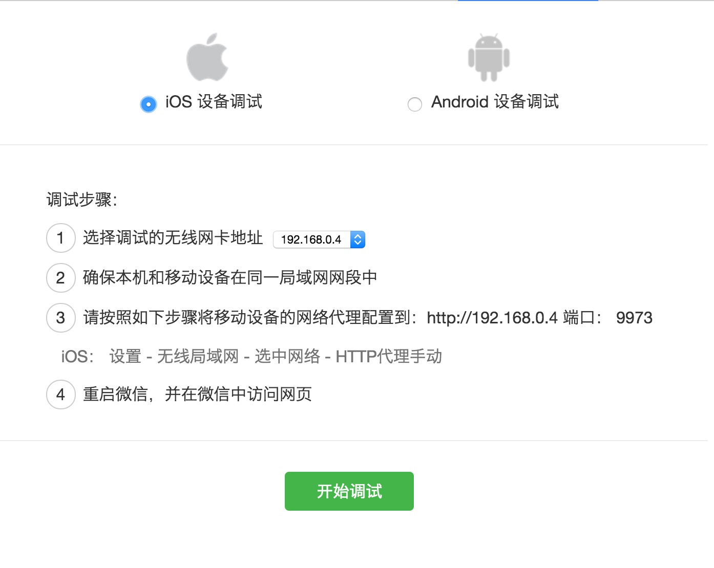
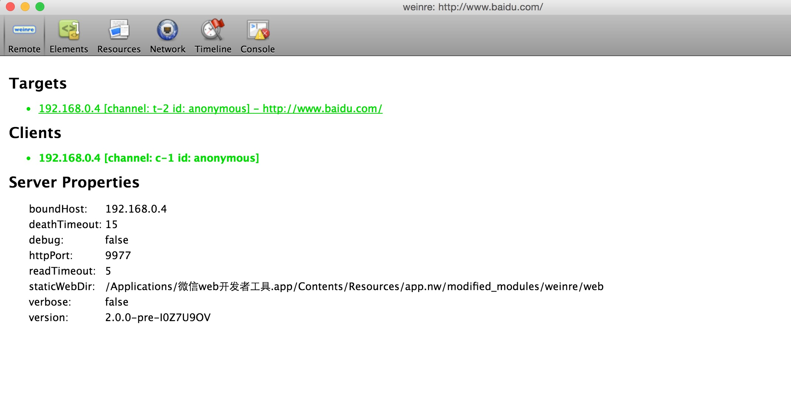

移动web前端开发者经常会需要解决ios和安卓平台的兼容问题(主要还是安卓,嗯,没错)
如果不能连接真机调试的话,一些比较奇葩的样式或缓存问题就需要开发者有足够的经验才能定位到问题;但是如果
能通过wifi或usb连接电脑直接调试,就相对容易定位到问题。(文章开头真难写)
这里主要介绍几种调试方法
- ios + safari(mac)
- android + chrome
- 微信调试
IOS+Safari 调试方法
iso＋safari，两个苹果的亲儿子
首先打开ios的 设置－safari－高级－web检查器
把如上图的设置好之后，使用usb链接mac
打开电脑的safari
safari的菜单栏－开发 就能看到链接的手机以及当前手机打开的网页
*缺点：只有当ios的safari等少部分支持的浏览器中打开支持这种调试方法，如微信和应用内webview很多都
不支持这样调试，不过本人比较常用这种方法
android + chrome
android(据说需要版本4.0以上)的调试方法首先需要将android机器设置到开发者模式
方法：
好像是 打开设置－关于本机－安卓版本号，然后连续点击七次（谁能解释一下为什么要点击七次吗？）
然后返回上一界面，就应该能看到有个开发者模式
点击进入，把usb调试的选项钩上
然后链接usb到电脑
电脑打开chrome浏览器
在地址栏上输入 chrome://inspect/#devices
我手上也没有安卓真机，没法截图
在安卓机上的浏览器打开网页，如上图就有手机当前打开网页的选项
可以通过点击选项的inspect按钮，打开调试
接下来的调试方法就和在chrome打开网页的调试方法一样了
微信调试
微信调试通过下载是微信官方提供给微信web开发者的调试应用来实现的
下载之后打开应用,会需要开发者先扫描登录

选择平台（ios，android）之后，会有提示需要手机和电脑在同一内网，然后设置wifi的http代理
设置好后重新打开微信，在微信内打开需要调试的网页，可在调试工具的主界面看到出现了打开的网页

点击要调试的网页，即可进入调试模式
*缺点：丑。还有样式调试也是相当难，给元素增改样式很麻烦